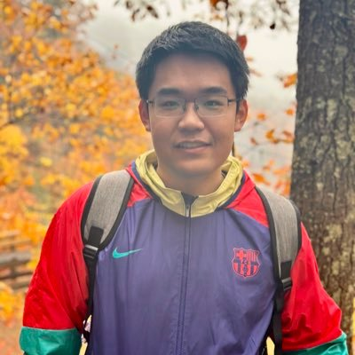
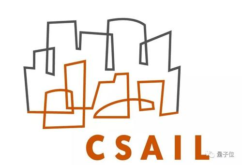
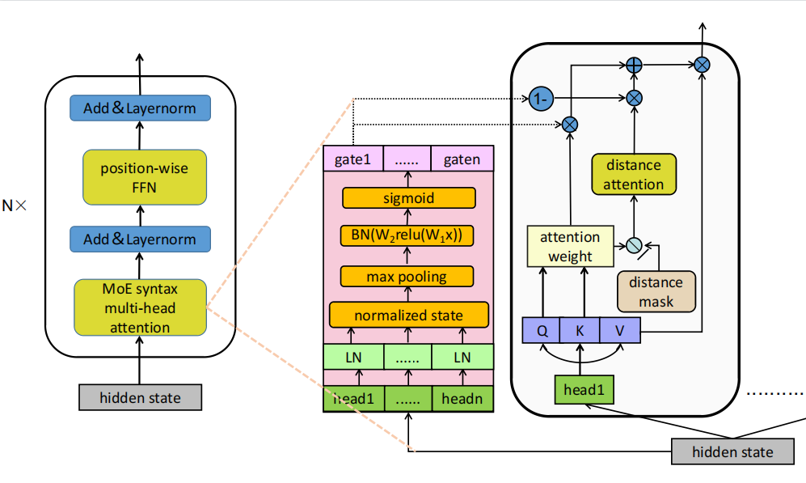
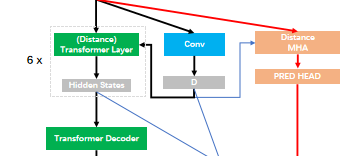
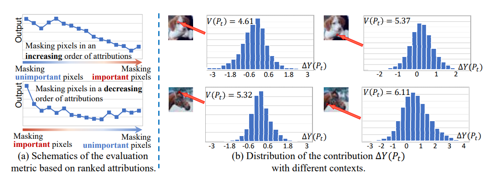
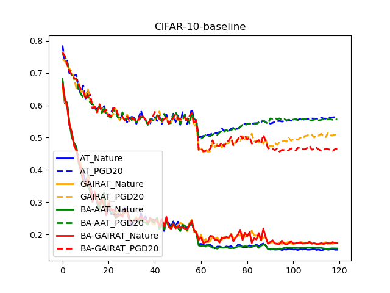

|
Haotian Xue (薛昊天)
I am currently a first year Ph.D. student at Machine Learning@ Georgia Tech, Atlanta. Previously, I got my B.E. Computer Science from Shanghai Jiao Tong University.
My research interest lies in broad aspects of Machine Learning ,Computer Vision and Natural Language Processing. I was
a research intern in MIT CSAIL advised by Prof.Josh Tenenbaum, working closely with Yunzhu Li and Hsiao-Yu Tung .
At SJTU John Hopcroft Center I worked closely with Prof. Quanshi Zhang on Explainable AI , especially on deep network inference on vision tasks, with Prof. Zhouhan Lin on Natural Language Processing.
🔈 [2022.8] I will start as a PhD student at Machine Learning Center at Georgia Tech (ML@GT) starting from 2022Fall, advised by Prof. Yongxin Chen. Looking forward to the life in Atlanta 🏔🏕🛤🌞 !
🔈 [2022.10] One co-first-author paper is accepted to EMNLP2022 Findings, it's about bringing structural syntax into self-attention. This work is advised by Prof. Zhouhan Lin from SJTU.
🐱 Email
|
GitHub
|
Google Scholar
|
My CV
|
Twitter
|
Notebook 🐱
|

|

Research Intern(2021)

Research Intern(Sem7)

Ph.D.@ML(2022 Fall)
Education📚
-
Shanghai Jiao Tong University, Shanghai, CHN
Sep 2018 - Jun 2022
B.E. in Computer Science and Engineering
-
Zhiyuan Honor College, Shanghai Jiao Tong University, Shanghai,
CHNSep 2018 - Jun 2022
B.E. in Zhiyuan Honors Program of Engineering
-
Machine Learning Center, Georgia Institute of Technology,
Atlanta, USFall 2022 - 2027(expected)
Ph.D. in Machine Learning
|
Academic Services
-
Reviewer for ICML'22, NeurIPS'22
|
|
Research Outputs📕
(*name_list) refers to equal contribution
|
[ICLR2023 submission]
Contribution : Haotian Xue, Yunzhu Li, Hsiao-Yu Tung, Antonio Torralba, Daniel LK Yamins, Joshua B.
Tenenbaum
Topic : Vision, Robotics, Intuitive Physics
|

|
|
"Syntax-guided Localized Self-attention by Constituency Syntactic Distance"
Contribution : (Haotian Xue*, Shengyuan Hou*, Jushi Kai*), Bingyu Zhu, Bo Yuan, Longtao Huang, Xinbing Wang, Zhouhan Lin
EMNLP2022 Findings
Topic : NLP, Syntax-Tree, Transformer
|

|
|
"Gating Self-attention with Syntactic Structure
for Low Resource Machine Translation"
Contribution : Shengyuan Hou, (Haotian Xue*, Jushi Kai*), Bingyu Zhu, Bo Yuan, Rui Wang, Xinbing Wang, Zhouhan Lin
[In submission]
Topic : NLP, Machine Translation, Transformer
|

|
|
"Distance-Transformer"[In Prepration, eary-stage contribution]
Contribution : Shengyuan Hou, Jushi Kai, Haotian Xue, Zhouhan Lin
Topic : NLP, Machine Translation, Transformer
|

|
"Towards a Unified Evaluation of Explanation Methods without Ground Truth"
[In submission]
Contribution : Hao Zhang, Haotian Xue, Jiayi Chen and Quanshi Zhang
Topic : Vision, Machine Learning, Explainable AI
|

|
"A Hypothesis for the Aesthetic Appreciation in Neural Networks"
[In submission]
Contribution : Xu Chen , Xin Wang , Haotian Xue, ZhengYang Liang and Quanshi Zhang
Topic : Vision, Machine Learning, Explainable AI
|

|
"Active Adversarial Training"
[B.E. Thesis]
Contribution : Haotian Xue, advised by Nanyang Ye
Machine Learning, Adversarial Learning, Active Learning
|

|
|
|
Miscellaneous
(10 yrs +) ⚽Football, I am a member of SEIEE football team and won the freshman cup with my teammates in 2018.
(5 yrs +) 🎹 Piano, amatuar player, once level 10 certification of Shanghai Conservatory of Music
(1.5 yrs +) 🌀 MOBA, I am a one year player of League of Legend. I enjoy playing HARD-CORE JUG and SUP.
|
|